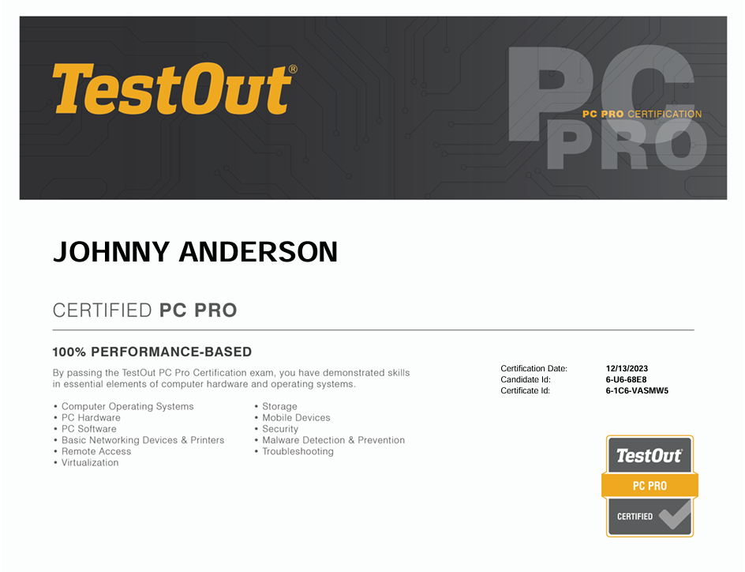
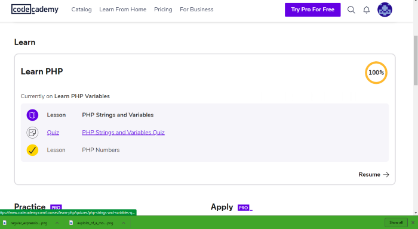
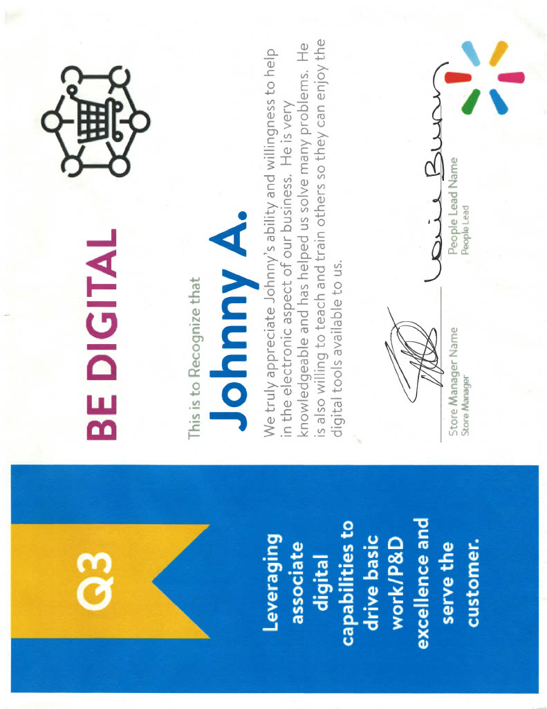

I have always been captivated by technology from a very young age and have made it my goal to comprehend its most elusive secrets. This has led me to perhaps the most complicated fields of the tech industry, cybersecurity. This is a showcase for all the knowledge and skills I have developed for both myself and my career in cybersecurity.


